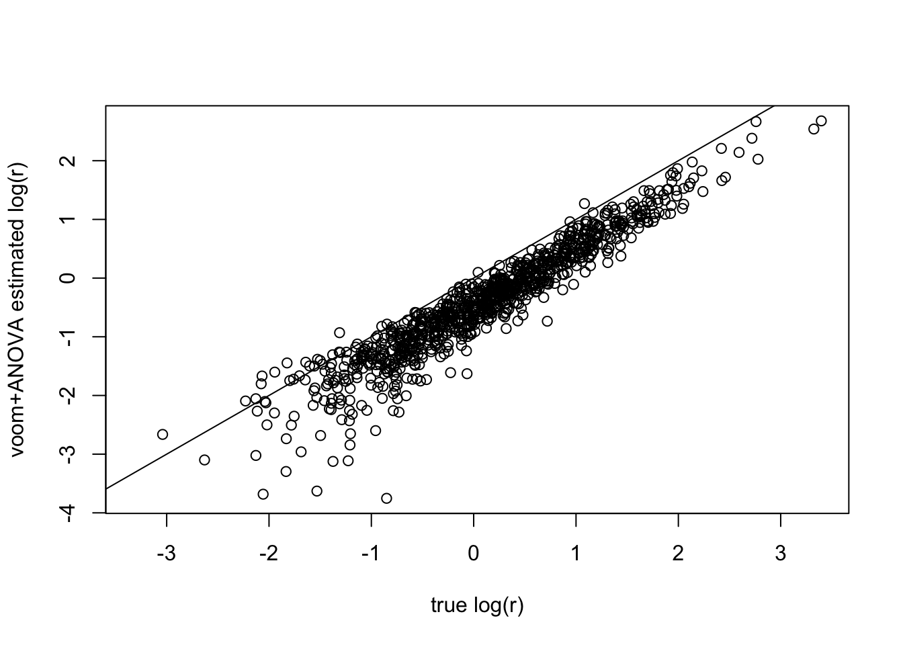

Last updated: 2016-02-10
Code version: 4805492d8e6eeaa8da3fd2ee38cdca1eb6c816ea
We simulate the count matrix from the following GLMM model \begin{align} Y_{gi} &\sim Pois(\lambda_{gi}), \\ \log(\lambda_{gi}) &= \mu_g+\beta_{g,c(i)}+e_{gi}, \\ e_{gi}\sim N(0,\sigma_{ge}^2), &\quad \beta_{g,c(i)}\sim N(0,\sigma_{gc}^2). \end{align}where \(\beta\) is the condition effect, \(e\) is the random error (or sample effect).
We define \(r_g^{(GLMM)} := \frac{\sigma_{ge}^2}{\sigma_{gc}^2}\), which is the ratio of condition variation and sample variation. We are interested in estimating \(r_g^{(GLMM)}\), or at least ranking the genes by this ratio.
set.seed(10000)
library(edgeR)Loading required package: limmalibrary(limma)
# Ngene: # of genes
# Nsamp: # of samples for each group
# K: number of groups
# logrmean, logrsd: generate true log(r)'s from N(logrmean, logrsd)
# mumean, musd: generate true mu's from N(logrmean, logrsd)
simcounts = function(Ngene, Nsamp, K, logrmean, logrsd, mumean, musd){
sigma.e = rep(0.2,Ngene)
logratio = rnorm(Ngene, mean=logrmean, sd=logrsd) #log(sigma.c^2/sigma.e^2)
sigma.c = exp((logratio+2*log(sigma.e))/2)
mu = rnorm(Ngene, mumean, musd)
beta = matrix(rep(rnorm(Ngene*K, 0, rep(sigma.c^2,each=K)),each=Nsamp), nrow=Ngene, byrow=TRUE)
e = matrix(rnorm(Ngene*K*Nsamp, 0, rep(sigma.e^2,each=K*Nsamp)), nrow=Ngene, byrow=TRUE)
lambda = exp(mu+beta+e)
counts = matrix(rpois(Ngene*K*Nsamp, lambda), nrow=Ngene)
condition = factor(rep(1:K,each=Nsamp))
return(list(counts=counts, condition=condition, logratio=logratio))
}
# Voom transformation & variance decomposition (ANOVA)
varcomp_voom = function(counts, condition){
dgecounts = DGEList(counts=counts,group=condition)
dgecounts = calcNormFactors(dgecounts)
design = model.matrix(~condition)
v = voom(dgecounts,design,plot=FALSE)
dgecounts = estimateDisp(dgecounts, design, robust=TRUE)
avelogcpm = dgecounts$AveLogCPM
combo = cbind(v$E,v$weights)
ratios = apply(combo,1,voom_ratio,condition=condition)
return(list(logratio = log(ratios), avelogcpm=avelogcpm))
}
# r.voom is defined by ANOVA's MST/MSE
voom_ratio = function(ynweights,condition){
y = ynweights[1:(length(ynweights)/2)]
weights = ynweights[(length(ynweights)/2+1):length(ynweights)]
fit = lm(y~condition, weights=weights)
ratio = sqrt(max(anova(fit)$F[1]-1,0)/length(unique(condition)))
return(ratio)
}
# Compute the ratios (sigma_c/sigma_e) for each gene
# Model: y~Pois(lambda), lambda=mu+b_cond+e, where b_cond~N(0,sigma_c^2), e~N(0,sigma_e^2)
varcomp_glmm = function(counts, condition){
ratios = apply(counts,1,glmm_ratio,condition=condition)
return(list(logratio = log(ratios)))
}
library(lme4)Loading required package: Matrixglmm_ratio = function(y,condition){
obs = factor(1:length(y))
fit = try(glmer(y~(1|condition)+(1|obs),family=poisson))
# Ratio = sigma_c/sigma_e
if (class(fit)=="try-error"){
ratio = NA
}else{
ratio = sqrt(as.numeric(summary(fit)$varcor$condition)/
as.numeric(summary(fit)$varcor$obs))
}
return(ratio)
}We simulate a count dataset, with 20 groups and 20 samples for each group (so the sample size is sufficient big).
We can estimate \(r_g^{(GLMM)}\)’s by GLMM (REML). Another way is to run ANOVA on voom transformed data, and use \(\hat{r}_g^{(voom)}:=MST_g/MSE_g\) to estimate the ratio of variations explained by condition effect & sample variation. Note that ANOVA is doing variance decomposition on log-cpm instead of the hidden Poisson mean space, so \(r_g^{(voom)}\) and \(r_g^{(GLMM)}\) are different quantities so not directly comparable! But we still hope the two ratios are correlated and have similar rankings.
We compare the true \(r_g^{(GLMM)}\)’s against their GLMM estimates and \(\hat{r}_g^{(voom)}\):
Voom+ANOVA: \(\hat{r}_g^{(voom)}\)’s are highly correlated with the true \(r_g^{(GLMM)}\)’s! Correlation>0.9. GLMM(REML): Has some outliers (very inaccurate estimates, especially for low-expressed genes). Correlation between estimates and true log-ratios is less than 0.7. Possible drawbacks of REML: REML is unstable in estimating variance components especially at some boundry conditions, and the computation time is much slower.
So maybe voom+ANOVA is a better choice? In this example it’s more stable, faster and accurate.
data = simcounts(Ngene=1000, Nsamp=20, K=20, logrmean=0, logrsd=1, mumean=6, musd=0.5)
voomr = varcomp_voom(data$counts, data$condition)
glmmr = varcomp_glmm(data$counts, data$condition)
plot(data$logratio,voomr$logratio,xlab="true log(r)",
ylab="voom+ANOVA estimated log(r)")
abline(0,1)
sum(voomr$logratio==-Inf)[1] 36cor(data$logratio[abs(voomr$logratio)!=Inf],voomr$logratio[abs(voomr$logratio)!=Inf])[1] 0.949803plot(data$logratio,glmmr$logratio,xlab="true log(r)",
ylab="GLMM estimated log(r)")
abline(0,1)sum(glmmr$logratio==-Inf)[1] 37cor(data$logratio[abs(glmmr$logratio)!=Inf],glmmr$logratio[abs(glmmr$logratio)!=Inf])[1] 0.6947711Try another example with small sample size: 4 groups and 5 samples for each group.
data2 = simcounts(Ngene=1000, Nsamp=5, K=4, logrmean=0, logrsd=1.5, mumean=6, musd=1)
voomr2 = varcomp_voom(data2$counts, data2$condition)
glmmr2 = varcomp_glmm(data2$counts, data2$condition)Warning in checkConv(attr(opt, "derivs"), opt$par, ctrl = control
$checkConv, : Model failed to converge with max|grad| = 0.0024274 (tol =
0.001, component 1)Warning in checkConv(attr(opt, "derivs"), opt$par, ctrl = control
$checkConv, : unable to evaluate scaled gradientWarning in checkConv(attr(opt, "derivs"), opt$par, ctrl = control
$checkConv, : Model failed to converge: degenerate Hessian with 1 negative
eigenvaluesWarning in checkConv(attr(opt, "derivs"), opt$par, ctrl = control
$checkConv, : Model failed to converge with max|grad| = 0.00146303 (tol =
0.001, component 1)Warning in checkConv(attr(opt, "derivs"), opt$par, ctrl = control
$checkConv, : Model failed to converge with max|grad| = 0.00122041 (tol =
0.001, component 1)plot(data2$logratio,voomr2$logratio,xlab="true log(r)",
ylab="voom+ANOVA estimated log(r)")
abline(0,1)sum(voomr2$logratio==-Inf,na.rm=TRUE)[1] 250cor(data2$logratio[abs(voomr2$logratio)!=Inf],voomr2$logratio[abs(voomr2$logratio)!=Inf])[1] 0.7718458plot(data2$logratio,glmmr2$logratio,xlab="true log(r)",
ylab="GLMM estimated log(r)")
abline(0,1)sum(glmmr2$logratio==-Inf,na.rm=TRUE)[1] 261cor(data2$logratio[abs(glmmr2$logratio)!=Inf & !is.na(glmmr2$logratio)],
glmmr2$logratio[abs(glmmr2$logratio)!=Inf& !is.na(glmmr2$logratio)])[1] 0.3841322sessionInfo()R version 3.2.3 (2015-12-10)
Platform: x86_64-apple-darwin13.4.0 (64-bit)
Running under: OS X 10.10.5 (Yosemite)
locale:
[1] en_US.UTF-8/en_US.UTF-8/en_US.UTF-8/C/en_US.UTF-8/en_US.UTF-8
attached base packages:
[1] stats graphics grDevices utils datasets methods base
other attached packages:
[1] lme4_1.1-10 Matrix_1.2-3 edgeR_3.10.5 limma_3.24.15 knitr_1.12
loaded via a namespace (and not attached):
[1] locfit_1.5-9.1 Rcpp_0.12.2 lattice_0.20-33 digest_0.6.8
[5] MASS_7.3-45 grid_3.2.3 nlme_3.1-122 formatR_1.2.1
[9] magrittr_1.5 evaluate_0.8 stringi_1.0-1 minqa_1.2.4
[13] nloptr_1.0.4 rmarkdown_0.9.2 splines_3.2.3 statmod_1.4.23
[17] tools_3.2.3 stringr_1.0.0 yaml_2.1.13 htmltools_0.3